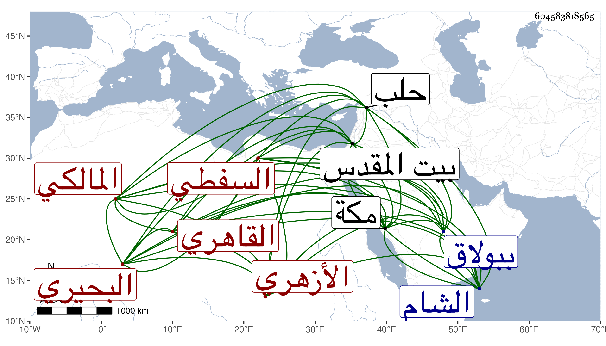

0902Sakhawi.DawLamic.ITO20230111-ara1.EIS1600.604583818565
Biography ID: 604583818565
192
محمد بن عبد الله بن صدقة الشمس السفطي البحيري ثم القاهري الأزهري المالكي ويعرف بأبي سعدة بضم المهملة . مات في ليلة السبت منتصف ذي القعدة سنة ثمان وسبعين وثمانمائة بعد تعلله مدة بالبطن وغيره . وتنزل بالبيمارستان ثم تحول منه لبيت أخ له ببولاق فكانت به منيته فنقل إلى البردبكية برحبة الأيدمري محل سكنه فغسل بها ثم صلي عليه ودفن في حوش الشيخ عبد الله المنوفي ، وكان قد حفظ القرآن والشاطبية والمختصر الفرعي وألفية النحو والحديث وغيرها ، وعرض على جماعة واشتغل في الفقه والعربية على العلمي وأبي الجود في آخرين وجمع للسبع وقرأ على الديمي ثم تردد إلى قليلا وأخذ عني طرفا من الاصطلاح بل سمع كثيرا مما قرأته للولد على بقايا الشيوخ ، وكان يضبط الأسماء بدون تمييز ولا أهلية ولا تثبت وحج وجاور بمكة أشهرا وكذا زار بيت المقدس بل دخل الشام وحلب وأخذ عن جماعة بها كابن مقبل خاتمة أصحاب الصلاح ابن أبي عمر ولازم قراءة البخاري على العامة بالأزهر في الأشهر الثلاثة مع المداومة على سبع عرف به وحصل كتبا نفيسة كان سمحا بعاريتها وتردد لبعض المباشرين وربما أقرأ مع توقف فاهمته ، وأظنه قارب الأربعين رحمه الله وإيانا .
